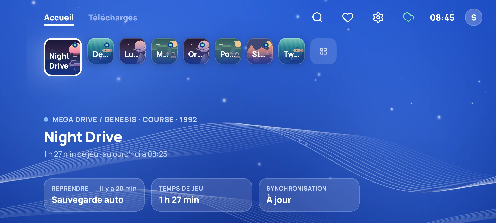
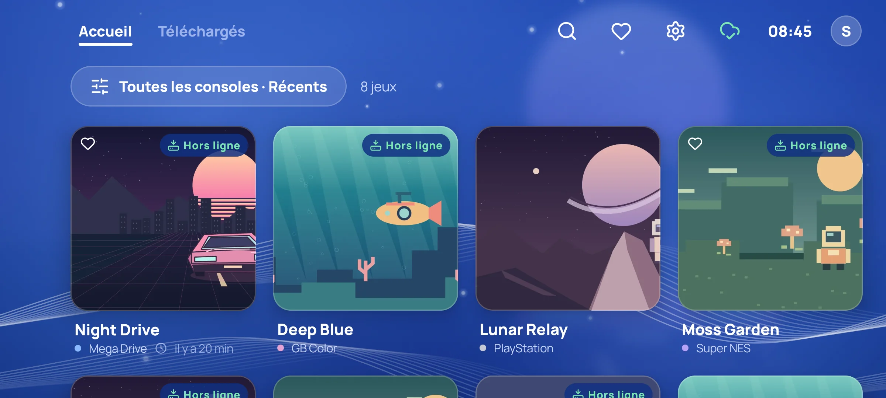
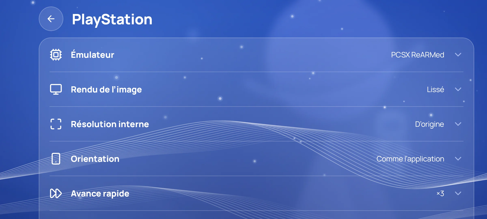
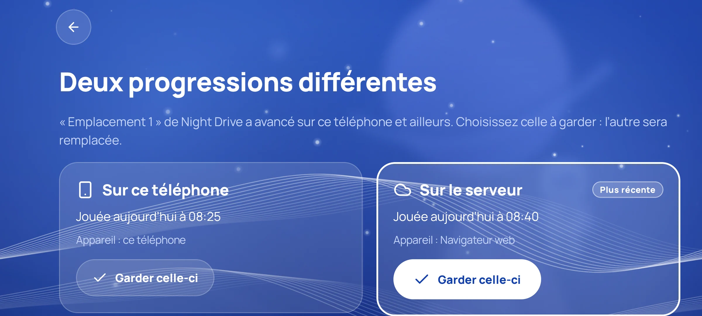

Même sans réseau.
Téléchargez vos jeux avant de partir. Ils restent jouables hors ligne ; vos sauvegardes se synchronisent au retour de la connexion.
L’application Android de RetroHub
Emportez les jeux de votre serveur RetroHub. Jouez hors ligne sur votre téléphone, puis reprenez votre partie sur le web.
Android 8.0 et plus. Serveur RetroHub requis.

Un accueil pensé comme une console. Votre bibliothèque, vos parties récentes et vos réglages à portée de main.
Choisissez un jeu dans la rangée de jaquettes. Votre dernière sauvegarde, le temps de jeu et la synchronisation restent visibles.

Parcourez vos jaquettes, filtrez par console et gardez vos favoris sous la main. Téléchargez les jeux que vous voulez emporter.

Rendu de l’image, résolution, boutons et vitesse d’avance rapide : adaptez chaque console à votre façon de jouer.
Téléchargez vos jeux avant de partir. Ils restent jouables hors ligne ; vos sauvegardes se synchronisent au retour de la connexion.
Les commandes tactiles s’adaptent à chaque console. Branchez une manette : elles s’effacent, et toute l’interface se pilote avec les boutons.
Commencez sur le téléphone, continuez dans le navigateur. Vos sauvegardes et votre temps de jeu suivent votre compte RetroHub.
Si vous avez joué des deux côtés, l’application vous laisse choisir la sauvegarde à conserver avant de remplacer quoi que ce soit.

Les émulateurs sont intégrés à l’application. Choisissez un jeu et lancez votre partie.
Les performances dépendent de votre téléphone, notamment pour la Nintendo 64 et la GameCube. Certains systèmes nécessitent un BIOS.
Une application gratuite, à relier à votre serveur RetroHub.
Téléchargez l’APK depuis GitHub. Ouvrez-le sur votre téléphone et autorisez l’installation si Android vous le demande.
Saisissez son adresse, puis le code d’appairage affiché dans RetroHub sur le web, ou connectez-vous avec votre mot de passe.
Votre bibliothèque apparaît dans l’application. Téléchargez un jeu pour y jouer, même hors ligne.